Web-App-Manifest¶
Das Web-App-Manifest ist zunächst einmal eine Datei, nämlich manifest.json. Sie wird also in der JavaScript Object Notation (JSON) geschrieben. Diese Datei dient als Information für den Browser. Sie wird also vom Browser ausgelesen. Beispielsweise kann in der manifest.json vereinbart werden, dass sich die Webanwendung selbst auf dem Startbildschirm Ihres Mobilgerätes installiert. Dann genügt ein Klick auf das Icon auf dem Startbildschirm und die Webanwendung wird durch den Browser geöffnet. Somit hätten wir schonmal eine wesentliche Gemeinsamkeit zu einer nativen App geschaffen, welche ja auch durch ein Klick auf ein Icon auf dem Startbildschirm gestartet werden können.
Wir lernen kennen, wie wir ein solches Manifest unserer PWA hinzufügen, wie es konfiguriert werden kann und wie wir die Auswirkungen eines solchen Manifestes auf mobilen Geräten sehen können.
Installierbar¶
Mithilfe eines Web-App-Manifestes machen wir unsere Webanwendung installierbar auf einem mobilen Gerät. Die Anwendung muss nicht einem App-Store hinzugefügt werden, sondern wird einfach über das Web durch einen Browser geladen. Normalerweise kann eine Webanwendung ja nur dadurch gestartet werden, dass ihre URL in den Browser eingetragen wird (oder Sie haben ein lesezeichen auf die Webanwendung in Ihrem Browser gesetzt). Nun wollen wir auf den Startbildschirm des Smartphones ein Icon setzen (genau wie für native Apps) und darüber die Anwendung starten.
Dafür fügen wir im Projektordner in dem Ordner /public die Datei manifest.json hinzu:
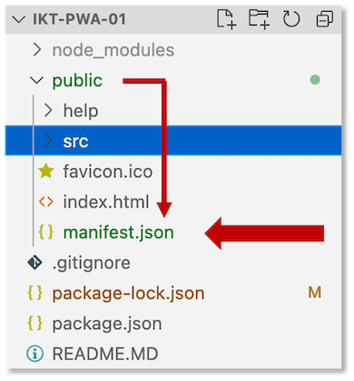
Diese Datei sollte genau so heißen und es ist günstig, sie in den /public-Ordner zu legen. Achten Sie darauf, wohin Sie die Datei legen. Wenn Sie sie direkt in den Projektordner legen, dann gelten alle Pfadangaben in dieser Datei ausgehend von dieser Position. Wenn Sie sie in den public-Ordner legen, so wie wir, dann betrachten Sie die relativen Pfade, die Sie angeben, immer von diesem Ordner aus.
Nun müssen wir diese Datei jeder HTML-Seite unserer Anwendung bekannt machen. In unserer Anwendung existieren zwei *.html-Dateien, die public/index.html und die public/help/index.html. In beide Datein tragen wir im <head> folgenden Eintrag ein:
<link rel="manifest" href="/manifest.json">
Aber Achtung! : Die public/help/index.html liegt ja im Unterordner /help. Das bedeutet, dass von der Datei public/help/index.html aus gesehen, muss der help-Ordner erst verlassen werden, um die manifest.json-Datei zu erreichen. In die public/help/index.html schreiben wir also
<link rel="manifest" href="../manifest.json">
Das heißt, der <head>-Bereich der public/index.html sieht dann wie folgt aus (und der von public/help/index.html sehr ähnlich - achten Sie auf den korrekten relativen Pfad!):
1 2 3 4 5 6 7 8 9 10 11 12 13 14 | |
In einer Single Page Application muss der Eintrag nur einmal erfolgen - in der single page, der index.html.
Mögliche Eigenschaften in der manifest.json¶
Einträge in einer JSON-Datei sind key-value-Paare, d.h. ein Eintrag hat die folgende Form:
"property": value
oder auf Deutsch "eigenschaft": wert. JSON-Dateien beginnen und enden immer mit einer geschweiften Klammer und die einzelnen key-value-Paare sind durch Komma getrennt. value kann selbst ein JSON sein oder ein Array oder ein String oder eine Zahl.
Wir betrachten nun einige ausgewählte properties, die in einer manifest.json definiert werden können. Einen vollständigen Überblick über alle möglichen Eigenschaften und deren Umsetzung in den einzelnen Browsern finden Sie hier. Eine kurze Einführung zu manifest.json finden Sie auch hier. Die Spezifikation für das Web-App-Manifest vom W3C finden Sie hier.
name¶
Mit der Eigenschaft name geben wir unserer Webanwendung eine Beschreibung. In der package.json haben wir unserer Anwendung bereits einen Namen gegeben, aber name aus der manifest.json beschreibt zum Beispiel den Namen der App auf dem Begrüßungsschrim, wie wir gleich sehen werden. Es ist ratsam, den Namen nicht länger als 45 Zeichen zu wählen (das ist die Begrenzung, die Google Chrome und Microsoft Edge für sich festgelegt haben). Wir sagen mal:
"name": "HTW-Insta Erweiterung"
Die Eigenschaft name ist in der manifest.json verpflichtend, d.h. sie muss angegeben werden (außerdem noch version und manifest_version, alle anderen Eigenschaften sind optional.)
short_name¶
Der Wert von short_name wird z.B. verwendet als Name unserer App unter dem Icon auf dem Startbildschirm (falls der Name dort mit erscheint). Der short_name sollte nicht länger als 12 Zeichen sein. Ist kein short_name in der manifest.json angegeben, wird der Wert von name verwendet und, falls nötig, einfach gekürzt.
"short_name": "HTW-Insta"
start_url¶
Der Wert von start_url gibt den Pfad und die Datei an, die beim Starten unserer Anwendung geladen werden soll. In unserem Fall soll die /public/index.html geladen werden. Die manifest.json-Datei befindet sich im /public-ordner, also ist der Pfad zur Datei nur /.:
"start_url": "/index.html"
Beachten Sie (nochmal): der Pfad ist immer relativ zur manifest.json. Anegenommen, der Wert von start_url ist ../start_point.html und die URL der manifest.json ist https://example.com/resources/manifest.json, dann würde die Anwendung unter https://example.com/start_point.html starten.
display¶
Der Wert von display gibt an, wie die Anwendung beim Start aussehen soll. Wir haben die Auswahl zwischen den folgenden Werten:
"fullscreen","standalone","minimal-ui"
Nähere Erläuterungen zu den einzelnen Werten finden Sie hier, aber am besten ist, Sie probieren die unterschiedlichen Werte einfach mal aus.
"display": "standalone"
Bei "standalone" wird das Browser-fenster ausgeblendet, d.h. wir sehen die URL-Leiste nicht und auch nicht die Steuerelemente des Browsers. Die Anwendung wirkt wie eine native App.
background_color¶
Der Wert von background_color ist eine Farbe, die wir typischerweise in hexadezimaler Schreibweise angeben. Ob wir diese Farbe überhaupt sehen, hängt davon ab, wie lange unsere Anwendung zum Laden bracuht, denn mit background_color geben wir die Hintergrundfarbe des Bildschirms an, der gezeigt wird, während die Anwendung lädt. Meistens sieht man das nicht, weil der Ladevorgang so schnell ist.
"background_color": "#76B900"
Wir wählen natürlich das HTW-Grün.
theme_color¶
Der Wert von theme_color ist eine Farbe, die z.B. die Farbe der Werkzeugleiste auf dem Smartphone bestimmt.
"theme_color": "#FF5F00"
Wir wählen mal das HTW-Orange.
description¶
Wenn der Browser eine Beschreibung der App speichert, dann nutzt er den Wert von description, z.B. wenn Sie die App als Lesezeichen speichern.
"description": "Eine tolle HTW-Insta-PWA"
lang¶
Mit der language-Eigeneschaft definieren Sie die Sprache Ihrer App. Der Wert ist der 4-buchstabige Ländercode, z.B. "en-US", "en-UK" oder "de-DE".
"lang": "de-DE"
Diese Eigenschaft wird vom Browser als Meta-Eigenschaft verwendet, kennen Sie schon aus den HTML-Dokumenten.
dir¶
Mit der direction-Eigeneschaft definieren Sie die Textrichtung Ihrer App. Die Werte sind einer der drei:
"ltr"(left to right)"rtl"(right to left)"auto"
Der Wert ist der 4-buchstabige Ländercode, z.B. "en-US", "en-UK" oder "de-DE".
"dir": "ltr"
orientation¶
Mit der orientation-Eigeneschaft definieren Sie, in welchem Bildschirmmodus die App betrieben (geffnet) werden soll. Bei den Werten haben Sie die Wahl zwischen:
"any""natural""landscape""landscape-primary""landscape-secondary""portrait""portrait-primary""portrait-secondary"
Die Angaben primary und secondary beziehen sich jeweils auf eine 180-Grad-Dreheung des Gerätes. secondary öffnet es also jeweils "auf dem Kopf".
"orientation": "portrait-primary"
Die Web-App sollte aber so gebaut werden, dass sie sowohl im Portrait- als auch im Landscape-Modus gut bedient werden kann (responsive).
icons¶
Die icons-Eigenschaft enthält ein Array aus Icons, die als das Icon der App auf dem Startbildschirm verwendet werden können. Typischerweise gibt man hier mehrere an, die sich in ihrer Auflösung unterscheiden, um das geeignete Icon auswählen zu können, das zur Auflösung des Ausgabegerätes passt. Gute Dimensionen sind z.B. 48X48 Pixel bis hin zu 512x512 Pixel.
Die Beschreibung eines Icons ist selbst ein JSON und enthält drei Eigenschaften:
"src"(der Pafd zum Icon und die Datei)"type"(der Typ des Bildes, z.B.image/png)"sizes"(die Größe des Bildes in Pixeln)
Der Browser sucht sich in Abhängigkeit von der Auflösung des Ausgabegerätes das am besten geeignete Icon selbständig aus.
"icons": [
{
"src": "/src/images/icons/fiw48x48.png",
"type": "image/png",
"sizes": "48x48"
},
{
"src": "/src/images/icons/fiw72x72.png",
"type": "image/png",
"sizes": "72x72"
},
{
"src": "/src/images/icons/fiw96x96.png",
"type": "image/png",
"sizes": "96x96"
},
{
"src": "/src/images/icons/fiw128x128.png",
"type": "image/png",
"sizes": "128x128"
},
{
"src": "/src/images/icons/fiw256x256.png",
"type": "image/png",
"sizes": "256x256"
},
{
"src": "/src/images/icons/fiw484x484.png",
"type": "image/png",
"sizes": "484x484"
}
]
Auch hier sind wieder die korrekten relativen Pfade zu beachten.
Es ist ziemlich mühsam, alle benötigten Icons und auch die obige JSON zu erzeugen. Zum Glück gibt es aber ein Werkzeug, das das für uns übernimmt: pwa-asset-generator. Sie benötigen nur das Ausgangsicon in Originalgröße und alles andere wird für Sie erledgt. Bitte unbedingt verwenden, um sich mühsame Arbeit zu sparen!
Testen der manifest.json¶
Insgesamt sieht unsere manifest.json nun so aus:
{
"name": "HTW-Insta Erweiterung",
"short_name": "HTW-Insta",
"start_url": "/index.html",
"id": "/index.html",
"display": "standalone",
"background_color": "#76B900",
"description": "Eine tolle HTW-Insta-PWA",
"lang": "de-DE",
"dir": "ltr",
"orientation": "portrait-primary",
"icons": [
{
"src": "/src/images/icons/fiw48x48.png",
"type": "image/png",
"sizes": "48x48"
},
{
"src": "/src/images/icons/fiw72x72.png",
"type": "image/png",
"sizes": "72x72"
},
{
"src": "/src/images/icons/fiw96x96.png",
"type": "image/png",
"sizes": "96x96"
},
{
"src": "/src/images/icons/fiw128x128.png",
"type": "image/png",
"sizes": "128x128"
},
{
"src": "/src/images/icons/fiw256x256.png",
"type": "image/png",
"sizes": "256x256"
},
{
"src": "/src/images/icons/fiw484x484.png",
"type": "image/png",
"sizes": "484x484"
}
]
}
Wir rufen unsere Anwendung im Browser (Verwenden Sie Google Chrome!) auf und öffnen außerdem die DevTools:
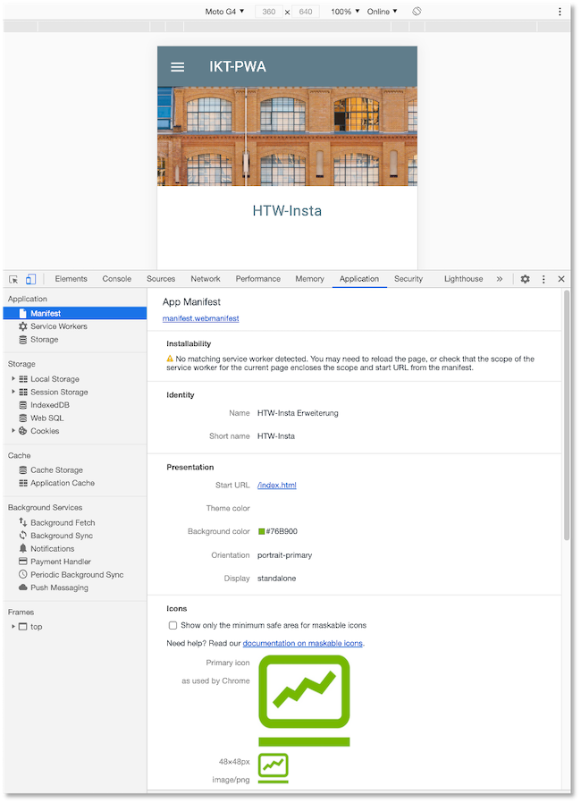
Wählen Sie für die Darstellung der App eine Mobilansicht aus (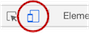) und klicken Sie auf den Reiter Application in den DevTools. Klicken Sie in den DevTools unter dem Reiter Application im linken Application-Menü auf Manifest. Dort sehen Sie, dass Ihre Konfiguration korrekt eingelesen wird. Es sollte nur eine einzige Warnung erscheinen, dass wir (noch) keine service worker eingerichtet haben.
Mit dem Web-Manifest ist unsere Anwendung installierbar - leider noch nicht ganz, da wir noch keinen Service worker haben und die Anwendung nicht offline verwendbar ist. Die Installierbarkeit lässt sich aber trotzdem testen, dazu müssen wir die Anwendung jedoch simulieren. Diese Schritte sind unter Optional - für Interessierte beschrieben. Sie müssen das aber nicht machen, Sie können stattdessen auch einfach einen ganz einfachen Service worker implementieren.
Dazu erstellen wir eine public/sw.js und binden diese wie folgt in die public/index.html ein (siehe auch Einführung):
<script>
// Check that service workers are supported
if ('serviceWorker' in navigator) {
// Use the window load event to keep the page load performant
window.addEventListener('load', () => {
navigator.serviceWorker.register('/sw.js');
});
}
</script>
und in die public/sw.js schreiben wir:
importScripts(
'https://storage.googleapis.com/workbox-cdn/releases/6.4.1/workbox-sw.js'
);
workbox.routing.registerRoute(
({request}) => request.destination === 'image',
new workbox.strategies.NetworkFirst() // NetworkFirst() vs CacheFirst()
)
Unsere Anwendung simuliert nun eine Offline-Fähigkeit und ist nun installierbar. Wenn wir die Anwendung mit npm start starten, dann erscheint:
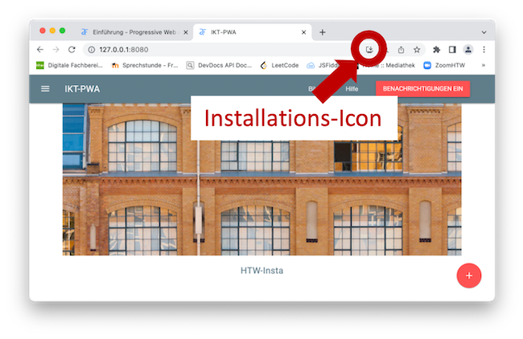
Sie können die Anwendung über das Icon installieren oder auch über das Options-Menü (die drei vertikalen Punkte neben der URL-Leiste). Es erscheint ein Confirmation-Menü:
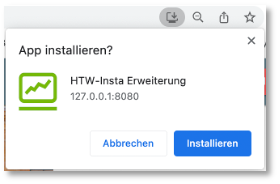
Nach der Installation der App ist diese (unter Mac) einerseits unter Programme/Chrome-Appszu finden, aber z.B. auch im Launchpad.
Das beforeinstallprompt-Ereignis¶
Das BeforeInstallPromptEvent wird ausgelöst, wenn Ihre Anwendung installierbar ist und Sie diese das erste Mal ausführen. Es wird ausgelöst, um Ihre Anwendung zu installieren. Ein typisches Vorgehen für die Behandlung des Ereignisses schlägt vor, die Anwendung nicht sofort, d.h. nicht durch die Behandlung des beforeinstallprompt-Ereignisses, zu installieren, sondern zunächst abzuwarten, ob die Anwendung auch tatsächlich so genutzt wird, dass sich eine Installation lohnt.
Für unsere Anwendung könnte das z.B. bedeuten, dass diese nicht beim ersten Aufruf installiert wird, sondern dass gewartet wird, bis die Nutzerin zum ersten Mal den +-Button klickt. Ein solches typisches Vorgehen ist z.B. hier beschrieben oder hier.
Wir zeigen hier einmal die Auswertung dieses Ereignisses, indem wir das Installieren durch einen Klick auf einen Installationsbutton erledigen lassen. Wie gesagt, die Behandlung des Klick-Ereignisses dieses Installationsbuttons gehört eigentlich woanders hin, je nachdem, was in der Anwendung gewünscht ist, also wann die Anwendung tatsächlich installiert werden soll.
Wir fügen zunächst den Button in die index.html ein:
<button id="install" style="display:none;" class="mdl-button mdl-js-button mdl-button--raised mdl-button--accent">
Installieren
</button>
Außerdem fügen wir folgendes Script in die index.html hinzu:
<script>
const installButton = document.getElementById('install');
console.log('installButton', installButton)
let deferredPrompt;
window.addEventListener('beforeinstallprompt', evt => {
console.log(evt.platforms); // e.g., ["web", "android", "windows"]
evt.preventDefault();
deferredPrompt = evt;
installButton.style.display = 'block';
})
installButton.addEventListener('click', async () => {
await deferredPrompt.prompt();
const choiceResult = await deferredPrompt.userChoice;
console.log(choiceResult.outcome);
});
window.addEventListener('appinstalled', () => {
installButton.style.display = 'none';
})
</script>
Der Button ist zunächst auf display:none gestellt, also nicht sichtbar. Wird das beforeinstallprompt-Ereignis ausgelöst, wird zunächst der "normale" Ablauf der Ereignisbehandlung ausgesetzt (preventDefault()). Stattdessen wird diese Aufforderung in deferredPrompt zwischengespeichert. Der Button wird auf sichtbar gesetzt (style.display = 'block'). Durch Klick auf den Button wird nun die Aufforderung, die in deferredPrompt zwischengespeichert ist, mithilfe von prompt() angezeigt.
Klicken wir nun auf den Button, erscheint die Aufforderung. Entscheiden wir uns dafür, die App zu installieren, wird diese installiert, was wiederum das Ereignis appinstalled aufruft. Als Ereignisnehandlung dieses Ereignisses können wir den Button wieder auf unsichtbar setzen.
Beachten Sie, dass das BeforeInstallPromptEvent nicht von allen Browsern unterstützt wird. Hier die aktuelle Übersicht aus BeforeInstallPromptEvent:
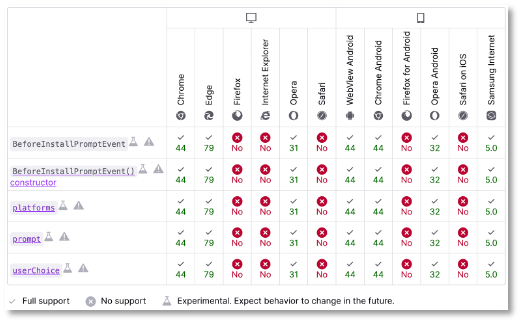
Optional - für Interessierte¶
Um die Funktionsweise des Web-App-Manifestes tatsächlich zu testen, benötigen wir jedoch ein Smartphone (oder Tablet). Wir wollen ein solches emulieren (ein Android-Smartphone) und starten dazu Android Studio. Wenn wir Android Studio öffnen, wählen wir zunächst + Create New Project. Durch die folgenden Vorschläge können wir einfach stets mit Next und dann mit Finish navigieren, ohne irgendetwas zu ändern. Wir sind gar nicht am Projekt interessiert, sondern nur am AVD Manager (Android Virtual Device Manaager), den wir unter dem Menüpunkt Tools finden.
Nach dem Öffnen des AVD-Managers haben Sie die Möglichkeit, weitere Android-Phones zur Liste Ihrer virtuellen Geräte hinzuzufügen.
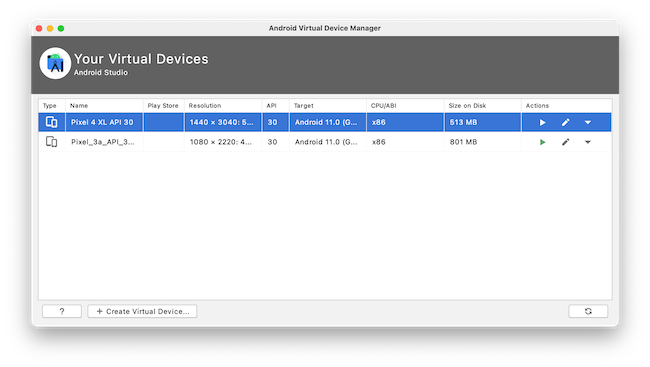
Das können Sie ruhig machen, um geräte mit verschiedenen Auflösungen ausprobieren zu können. Wählen Sie dann ein Gerät Ihrer Wahl und klicken Sie für das Gerät unter der Spalte Actions auf den Play-Button:
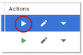
Das dauert dann eine ganze Weile, aber am Ende erscheint ein Smartphone auf Ihrem Bildschirm:
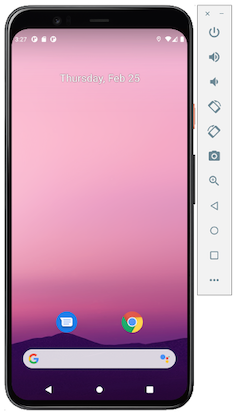
Auf diesem Android-Gerät ist Google Chrome verfügbar. Starten Sie Google Chrome dort durch Mausklick und geben Sie als URL 10.0.2.2.:8080 ein. Unsere Webanwendung wird geöffnet:
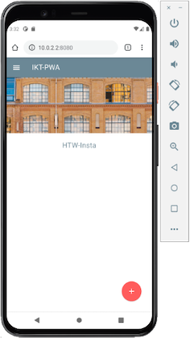
Klicken Sie jetzt auf die drei vertikalen Punkte neben der URL-Leiste und wählen Sie Add to Home screen:
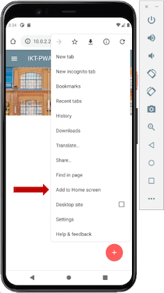
Es wird uns eines unserer Icons angeboten und der unter name gewählte Name:
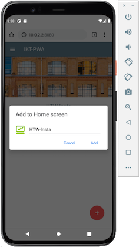
Klicken Sie Add und dann Add automatically. Das Icon erscheint auf dem Homescreen (Startbildschirm). Eventuell müssen Sie den Browser zuvor schließen. Klicken Sie auf das Icon, um unsere Anwendung zu starten. Sie sehen kurz den Splashscreen mit der von uns gewählten Hintergrundfarbe HTW-Grün.
Beachten Sie auch, dass um unsere Anwendung herum kein Browser-Fenster zu sehen ist. Sie läuft standalone (natürlich im Browser, aber der ist nicht zu sehen). Das sieht man insbesondere, wenn man sich alle geöffneten Anwendungen anschaut:
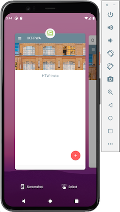
Sobald wir für unserer PWA auch noch einen service worker registriert haben, kommen wir nochmal hierher zurück und werden dafür sorgen, dass der Browser uns sogar fragt, ob wir ein Icon auf dem Startbildschirm ablegen wollen.
Erstaz für manifest.json für Safari¶
Leider unterstützt Safari (Apple) das manifest.json (noch) nicht, obwohl es eine Spezifikation des W3C ist. Über die Browser-Untertützung für das Web-App-Manifest können Sie sich z.B. hier informieren. Die Seite enthält auch eine gute Zusammenfassung aller Eigenschaften des Web-App-Manifestes. Es lohnt sich auch ein Blick hierauf.
Um für Safari eine ähnliche Funktionalität zur Verfügung zu stellen, wie das Web-App-Manifest, müssen in den HTML-Dateien unserer Anwendung ein paar Meta-Angaben erfolgen:
1 2 3 4 5 6 7 8 9 10 11 12 | |
So wirklich klar ist es allerdings nicht, inwieweit Apple tatsächlich PWAs unterstützt und unterstützen möchte. Es scheint eher so, dass Apple volle Kontrolle darüber behalten möchte, welche Apps auf iPhones oder iOS-Tablets laufen dürfen, nämlich solche, die (nur) über den App-Store verfügbar sind. Siehe dazu z.B. hier und hier. Sollten Sie ein iPhone haben und sollte Ihre Anwendung mithilfe von npm start ausgeführt sein, so können Sie allerdings mal http://141.45.57.28:8080 in Ihren Browser im Handy eingeben. Es muss nichts weiter installiert werden. Sie können aber kein Icon auf den Startbildschirm ablegen :-(.
Eine weitere Unterstützung für iOS Safari bietet PWACompat. Sie müssten dann entweder in die index.html unterhalb des Einbindens der manifest.json noch
<script async src="https://unpkg.com/pwacompat" crossorigin="anonymous"></script>
statisch hinzufügen oder dynamisch für den folgenden Fall:
<script type="module">
// detect iOS Safari
if (('standalone' in navigator) && (!navigator.standalone)) {
import('https://unpkg.com/pwacompat');
}
</script>
Success
Wir haben unsere Webanwendung installierbar gemacht. Zumindest auf Android-Geräten. Dies geschieht mithilfe der Datei manifest.json, die wir in alle html-Seiten unserer Anwendung einbinden. Wir haben viele Eigenschaften kennengelernt, die wir in diesem Web-App-Manifest definieren können. Mithilfe des Emulators von Android Studio können wir die Anwendung des Web-App-Manifestes auf Android-Geräten ausprobieren. Wir schauen uns nun einen weiteren zentralen Funktionsblock an, nämlich Service Worker.